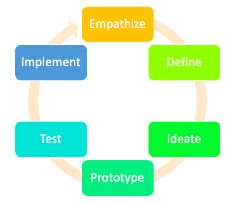

Design Thinking is an ideology accompanied by a process to create a user-centric approach for problem-solving. Design thinking is adopted by organizations in different industries across the world to innovate cutting-edge products.
The Design Thinking process can be explained by the three stages - Understand, Explore, and Materialize. The process comprises of 6 phases that fall within the three stages:
- Empathize
- Define
- Ideate
- Prototype
- Test
- Implement
Design Thinking is not a linear process and is meant to be a continuous approach for the design and development of products.
